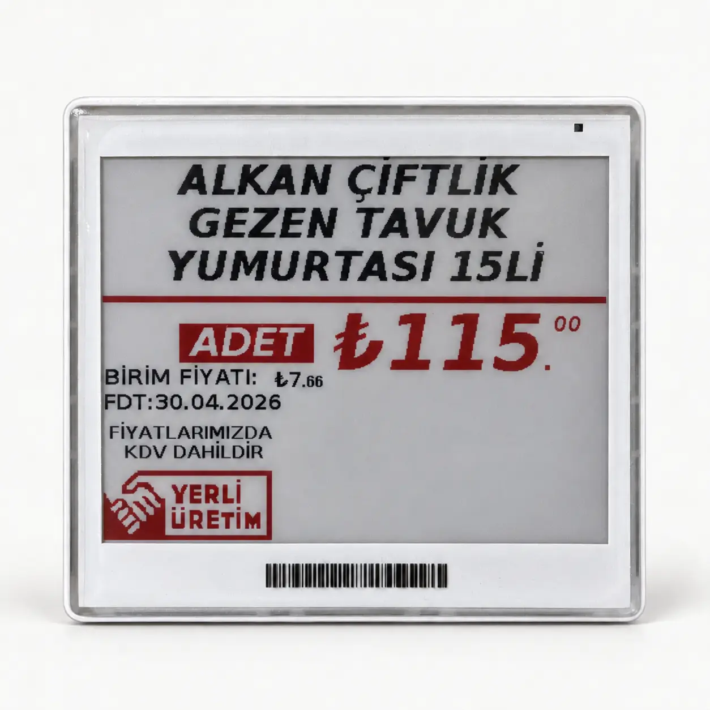

Market Elektronik Raf Etiketi
Marketlerde fiyat ve kampanya güncellemelerini tek merkezden yönetin. Etiket, gateway, raf tutucusu ve kasa entegrasyonunu aynı kurulum planında değerlendirin.
Raftaki fiyat nasıl güncellenir?
- Kaynak veriyi belirleyin: Ürün kodu, barkod, satış fiyatı, birim fiyat ve kampanya tarihleri mevcut kasa veya ERP sisteminden alınır.
- Ürün ve etiketi eşleyin: Aynı ürünün birden fazla rafta bulunması ve geçici kampanya alanları ayrı etiket noktaları olarak planlanır.
- Güncellemeyi izleyin: FI entegrasyon katmanı uygun veri aktarım yöntemiyle bilgiyi gateway üzerinden ilgili etiketlere gönderir. Güncelleme durumu ve eşleşmeyen kayıtlar kontrol edilir.
Kaynak sistemin API, SQL veya dosya aktarım imkânları projeye göre incelenir. ERP/POS entegrasyonunu inceleyin.
Reyona göre ekran ve tutucu seçimi
Kuru gıda rafında okunabilir fiyat ve ürün adı, soğutucuda çalışma sıcaklığı, manavda birim fiyat ve künye alanı farklı ihtiyaçlardır. Etiket ölçüsünü rafın kullanılabilir alanına ve göstereceğiniz bilgilere göre seçin; dondurucu uygulamasında modelin çalışma aralığını ayrıca doğrulayın.
- 2,13 inç LS0213: dar standart raflarda ürün ve fiyat yerleşimi.
- 2,90 inç LS0290: daha geniş ürün adı, birim fiyat veya kampanya alanı.
- 4,20 inç LS0420: ek ürün bilgisinin gösterildiği geniş reyon ve tezgâhlar.
Etiket gövdesine uygun raf profili, klips veya standı gerçek raf ölçüsüyle birlikte belirleyin. Taze gıda için HKS ürün künyesi uygulamasına da bakın.

Şube ve gateway planı
Etiket adedi tek başına gateway sayısını belirlemez. Katlar, raf ve soğutucu yerleşimi, ağ altyapısı ve şubelerin ayrı bağlantıları yerinde değerlendirilir. AP2400S-6.0 gateway ve yazılım kapsamı teklifin ayrı kalemleri olarak yazılır.
Keşif için hazırlamanız gerekenler
- Şube sayısı ve her şubedeki fiyat gösterilecek raf noktası adedi.
- Reyon ve soğutucu fotoğrafları, raf ölçüsü, tutucu ihtiyacı.
- Kullandığınız kasa/ERP yazılımı, örnek ürün listesi ve fiyat güncelleme akışı.
- Kampanya, birim fiyat ve HKS künyesi gibi etikette gösterilecek bilgiler.
Etiket, gateway, tutucu, yazılım ve kurulum tutarlarını aynı kapsamda karşılaştırmak için fiyat ve maliyet rehberini kullanın.
Sahadaki çalışmalarımız
Petrol Ofisi istasyonu Pazarcı Akaryakıt da referanslarımız arasındadır. Her mağazanın rafı ve mevcut yazılımı farklı olduğu için kurulumu keşif ve yazılı kapsam üzerinden planlıyoruz.